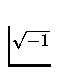
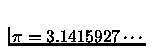
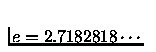
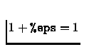

Scilab provides special constants %i, %pi, %e, and %eps as primitives. The %i constant represents

, %pi is
, %e is the trigonometric constant
, and %eps is a constant representing the precision of the machine (%eps is the biggest number for which
). %inf and %nan stand for ``Infinity'' and ``NotANumber'' respectively. %s is the polynomial s=poly(0,'s') with symbol s.(More generally, given a vector rts, p=poly(rts,'x') defines the polynomial p(x) with variable x and such that roots(p) = rts).
Finally boolean constants are %t and %f which stand for
``true'' and ``false'' respectively. Note that %t is the
same as 1==1 and %f is the same as ~%t.
These variables are considered as ``predefined''. They are protected, cannot be deleted and are not saved by the save command. It is possible for a user to have his own ``predefined'' variables by using the predef command. The best way is probably to set these special variables in his own startup file <home dir>/.scilab. Of course, the user can use e.g. i=sqrt(-1) instead of %i.